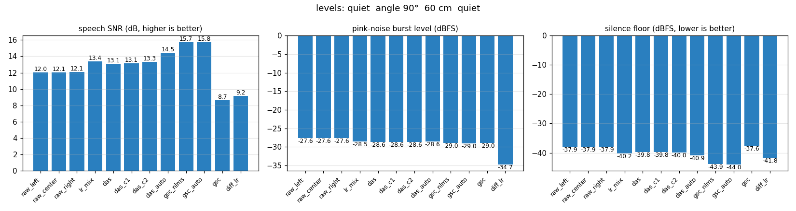
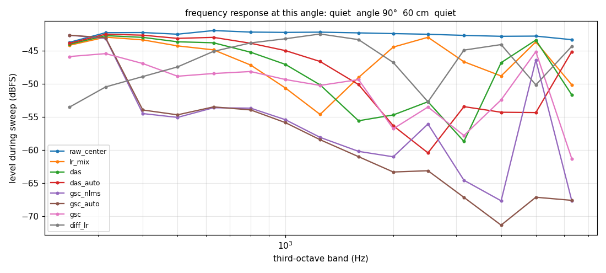
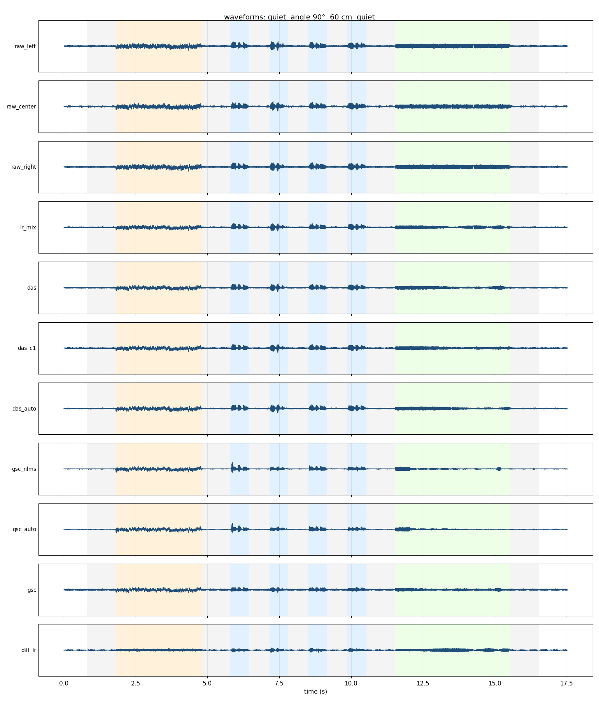
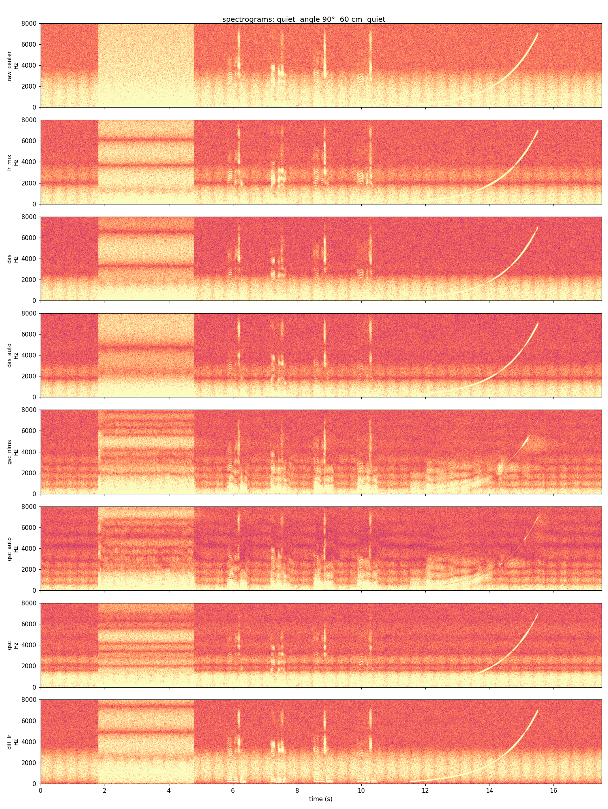

angle 90°, 60 cm, quiet, 17.53 s. Clip offset 0.8 s (confidence 0.928).
Microphones hear the source at +84° (L-R delay 6.5 samples, peak 9.4).
| path | rms_dbfs | speech_snr_db | noise_level_dbfs | silence_floor_dbfs | peak | clips |
|---|---|---|---|---|---|---|
| raw_left | -29.84 | 12.04 | -27.59 | -37.93 | 6525 | 0 |
| raw_center | -29.84 | 12.05 | -27.59 | -37.93 | 6729 | 0 |
| raw_right | -29.85 | 12.06 | -27.59 | -37.92 | 6332 | 0 |
| lr_mix | -31.55 | 13.39 | -28.53 | -40.24 | 5631 | 0 |
| das | -31.65 | 13.08 | -28.65 | -39.75 | 5605 | 0 |
| das_c1 | -31.66 | 13.13 | -28.61 | -39.8 | 5778 | 0 |
| das_c2 | -31.6 | 13.3 | -28.62 | -39.97 | 5933 | 0 |
| das_auto | -31.54 | 14.46 | -28.57 | -40.92 | 5748 | 0 |
| gsc_auto | -33.32 | 15.75 | -29.03 | -43.96 | 8142 | 0 |
| diff_lr | -34.74 | 9.16 | -34.71 | -41.77 | 3814 | 0 |
| gsc | -32.74 | 8.65 | -28.98 | -37.65 | 4492 | 0 |
| gsc_nlms | -33.18 | 15.7 | -28.97 | -43.89 | 8510 | 0 |



